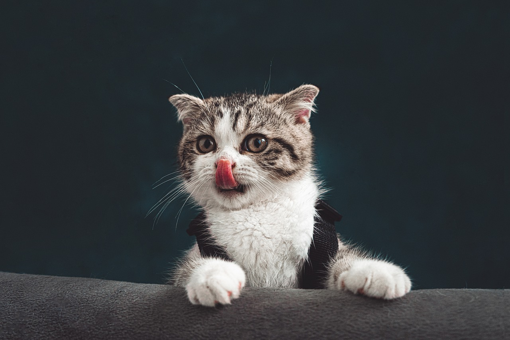
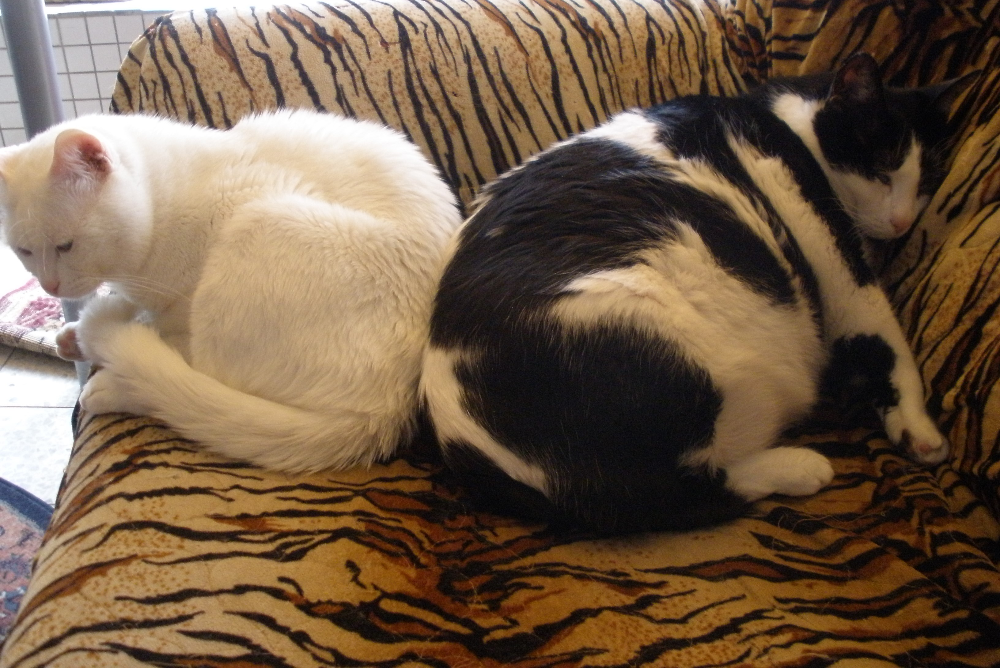

How choose a healty diet for your cat?
Sometimes we are feed our pets with a fomus dry food compny, but we don't really know if that contein all what they need.
when we looking for a healty diet for our-self, We will check if the food contains enough protein, fiber,
percentages of components such as: meat, fruit, vegetables. We will also check the amount of carbohydrates and fats.
So when it comes to our animals that are fed on main food it is even more important that the food should contain the most ingredients for their nutrition.
Is a link that will help you in choosing cat food with dozens of well-known companies that are sold around the world
and rated 100-0 according to the high amount of meat / fish, vitamins, minerals and the smallest amount of carbohydrates.
Link to "Dry Cat Food Evaluation And Comparison"

How to move apartment with a cats?
Moving house with cats can be a daunting task. Not the actual transfer of the cat from one space to another, but its adaptation to the new place.
There will be cats whose adaptation will be rapid and there will be those who have hidden in hiding and in more exceptional cases will not want to drink and eat.
What can we do to make the transition easier?
First, on the day of arrival at the new apartment, place the cat in a quiet room with objects he is familiar, it is advisable to move as many objects with a familiar smell
to the cat as blankets, pillows, toys, dining facilities,Even the sandbox move as he is and not to empty before moving, put all of this in the same room.
Keep windows closed, frightened cats may jump out of the window as escape routes.
Apart from the usual food bowl of the cat you can give the cat "treats" in the first days and try to be around and in touch.
After the house was quiet from all the getting organized and the noise they opened the door and allowed the cat to leave whenever he felt comfortable.

Why Adopt your cat?
In the next section, I will discuss the situation in Israel.
quite a few people still buy their pets because they want a certain look, color, character.
This is despite the knowledge that there are many stray cats or abandoned kittens, completely healthy.
People would rather finance the breeding industry and pay money than adopt, of course not everyone.
When buying an animal that came from breeding, genetic diseases develop that are passed on to purebred breeds,
people will buy the animal and after a while the disease will float and they will abandon the animal or fight for their lives with drugs and treatments.
Personal story:
I adopted a purebred mature cat, that she was abandoned in the box.
The story touched my heart and I chose to adopt her even though they were small and young cats ...
After a short time I discovered her immune system was very weak, I went through a lot of vets, it's was hard for saw her suffr.
Almost a year and a half after, she just did not survive.
This is one reason why it is important for me to make it clear that there are healthy mixed cats that are just waiting for a warm home and a good meal.
Street cats survive for up to 3 years on average and there are some that do. Domesticated cats average 14 years, I know cases of 18-20 years.
Now, i have a cat 13 years old his name "Bealiy" and before we have a cat 12 years old his name was "Moska".

Moska (right) and Bealiy (left) 10 years ago